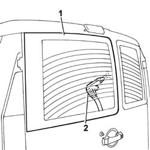

7035B04 rear window eliminate leaks
- Path
- Procedures > 70 FITTINGS > 7035 BODYSHELL WINDOWS > 7035B rear window > 7035B04 rear window eliminate leaks
- Kind
- repair procedure (removal / refitting; the operation number is the code)
- Applies to
- all engines; all production periods
- Interactive page
- https://sloeber94.github.io/elrnDB-fDbl/en/#/2585121
Applies to: all engines; all production periods
1. Wet the outside of the glass with soapy water.
2. Blow through from the inside with compressed air and identify the penetration point.

Applies to: all engines; all production periods
If the penetration point is limited in size, seal the area concerned from the inside.
Wait for the product to dry and repeat the test.
If the penetration point is more extensive, refer to op 7035B24